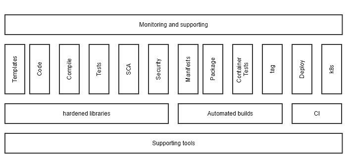

Overivew
A DevKit consists of all the tools required to build, test, and deploy code. It also provides a "low-code" environment. These means templates build the core of your application and you bring your data model and business logic.
You can find training material following this short introduction to the DevKit tool network. Each section starts with a description of the DevKet enhancement to the standard tools, the integration with other tools in the network, and a short getting started tutorial.
After that you will find links for free and paid resources we have reviwed and selected oragniazed by books, videos, and tutorials.
A DevKit consists of all the tools required to build, test, and deploy your code. Skip overview and jump to training
Tool network steps
| Step | Description |
|---|---|
| Services |
Services, or templates, provide a pre-made base for you to start coding. Templates are provided for a varitey of microservcies, serverless (faas), and Kubernetes custom resource. You can create templates using the CLI or portal. |
| Code | Covers reviews the development environment including: compilers, IDE, debuggers, dependency management, and other tools used while writing your code. |
| Building/Compiling | DevKits provide simple but powerful makefiles to drive the build process. Including; self documenting code, manifest generation, starting and stopping local instances, automated test execution, tagging, publishing to a respository, and deploying to local or remote kubernetes clusters. |
| Testing | Reviews writting test for GoLang including; function, performance, and integration. Base tests are provided for core template functions. Tesing is also integrated with third party tools like SonarCloud. |
| Static Code Analysis | Covers the "linters" installed in your DevKit and their usage. |
| Security | Covers security checks performed as part of the build process. |
| Manifests | The build process generates docker and Kubernetes manifests. |
| Packaging | Builds the docker images that are published to a repository. |
| Container tests | Before containers are pushed to a repository, you have the option of using container test tools to verify their integrity. |
| Tagging | Before containers are pushed to a repository, they are tagged. This section describes the default taggin policy and options for overridding them. |
| Deployment | By default, following a successful build, your code is deployed to a local Kuberntes cluster. This section describes that deployment and your options for changing. |
| Microk8s | Microk8s is installed providing a single node Kubernetes cluster. This section covers configuring options and day-to-day usage of k8s in your development enviornment. |